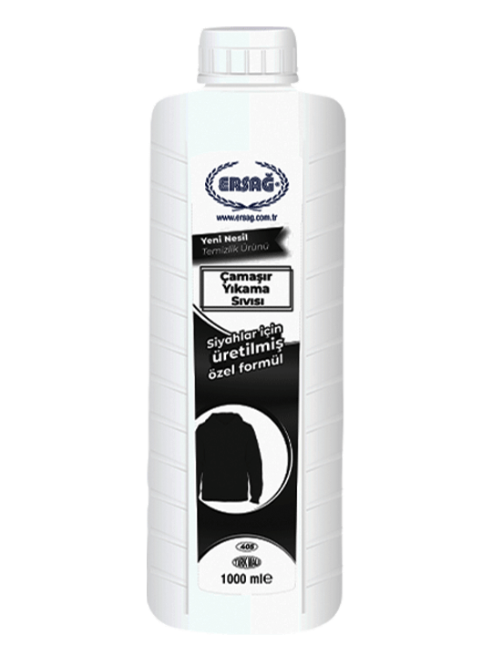
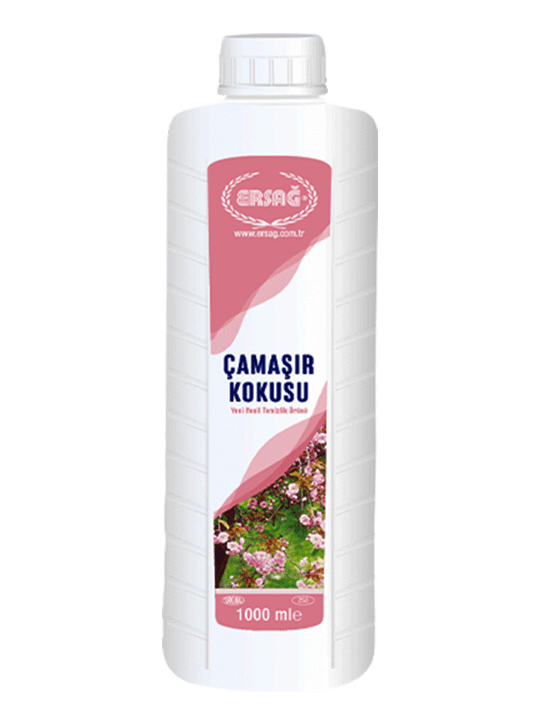
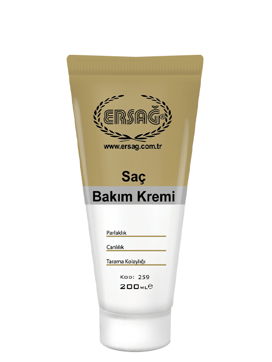
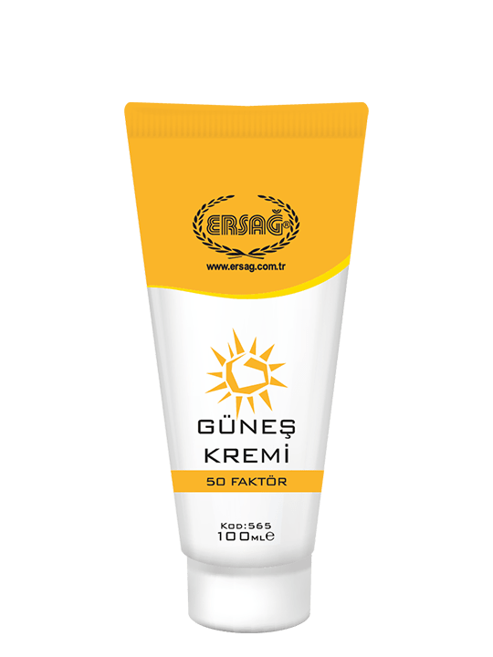

З 2006 року до сьогоднішнього дня група компаній Ersağ є
корпоративною компанією, яка з початку своєї діяльності
використовує природні матеріали у своїх продуктах з екологічним
підходом. Ersağ виробляє побутові та косметичні товари та здійснює
їх прямий продаж клієнтам через систему мережевого маркетингу.
Місія Ersağ:
виготовляти якісний продукт, використовуючи сучасні технології,
для того, щоб наш клієнт користувався екологічно чистою продукцією
з турботою про своє здоров’я. Наші клієнти – це люди зі всього
світу. Ті, хто вже користується нашим продуктом – не забруднюють
землю і надземні води своєї країни та залишають чистіше навколишнє
середовище, дбаючи про майбутнє наших дітей.
На мийних засобах, як правило, вказують тільки вид
сурфактантів (аніонні, неіоногенні) і процентний вміст. Так що
купуючи порошок, звертайте увагу саме на тип використовуваних
ПАР (пам'ятаєте – аніонні найагресивніші) та їх кількість –
чим менше ПАР, тим менше шкоди для здоров'я.
Засіб для чищення загального призначення із приємним ароматом
розроблений спеціально для твердих поверхонь: паркет,
керамічна плитка, ламінат, тощо.
Засіб концентрований. Спосіб використання:
розведіть в 10л води 1-2 мірних ковпачки засобу на ваш розсуд.
Для досягнення бажаного результату протріть поверхню насухо.
Завдяки органічному складу не несе шкоди організму та не
дратує шкіру рук. Форма випуску: Рідина Склад: Вода, Мильне Дерево
Ritha (Sapindus Mukorossi), Активна речовина -
ПАР(неіоногенний > 5%); Парфуми (Евгенол, Гераніол, Ліналоол
та Лімонен). Примітка:
- Обов'язково прочитайте інструкцію
- Не використовуйте для миття рук, обличчя та продуктів
харчування
- Зберігайте подалі від дітей
Більше інформації
Загальне прибирання
105 - номер для замовлення / 1000мл
Опис
Миючий засіб для ванної та туалету забезпечує чистоту ваших
душових кабін, унітазів, керамічних плиток, мармуру та ванни.
Засіб концентрований та економічний.
Засіб концентрований. Спосіб використання: при
першому використанні на забрудненій поверхні засіб наноситься
без розведення у воді. Нанесіть його на поверхню, протріть
губкою чи ганчіркою та змийте засіб водою. Зверніть увагу, щоб
губка чи ганчірка були новими. Тип продукту:Антибактеріальний та протигрибковий. Дезинфікуючий засіб, що
не призначений для безпосереднього застосування людям або
тваринам. Форма випуску: Рідина Склад:Діюча речовина -
Розчин перекисю водню (2%) та допоміжні речовини (Стабілізатор
+ Ароматизатор + Розчинник)
Більше іформації
Для ванн та туалетів
107 - номер для замовлення / 1000мл
Опис
Рідина для миття посуду - ефективний та економний миючий
засіб. Підходить для миття всіх видів посуду. Достатньо кілька
крапель для досягнення бажаного результату. Крім миття посуду,
даний засіб також добре очищує крани і кухонні поверхні.
Спосіб використання:
розчиніть кілька крапель Ersag для миття посуду у воді або
безпосередньо нанесіть на губку для миття посуду.
Більше інформації
Миття посуду
118 - номер для замовлення / 1000мл
Опис
Для миття вікон, меблів та килимів.
Спосіб використання:
зволожити теплою водою тканину на місці забруднення, нанести
невелику кількість засобу. Залишити на 5 хв. Далі протерти
чистою ганчіркою. Застаріле забруднення можливо не виведеться
з першого разу. Для миття вікон, скла або твердих поверхонь -
3 краплі концентрату на 1 літр води. Для чищення м'яких меблів
та килимів - 5 крапель на 1 літр води.
Більше інформації
Крапля концентрат
161 - номер для замовлення / 1000мл
Опис
Розчинник жиру від Ersag є чистячим засобом, для видалення
жирних плям на вашій кухні. Концентрат.
Спосіб використання: після
нанесення засобу на поверхню зачекайте декілька хвилин, потім
протріть вологою ганчіркою. При першому застосуванні не
розбавляйте з водою. Надалі засіб розбавляють з водою в
співвідношенні 1:1 або 1:3. Рекомендується застосовувати з
гарячою водою.
Більше інформації
Видалення жиру
114 - номер для замовлення / 1000мл
Опис
Видаляє жир. Легко відмиває сильні забруднення посуду.
Спосіб використання:
налийте гель у відповідний відділ посудомийної машини до
позначки мінімального рівня. Для отримання кращого результату
рекомендується попередньо очистити посудомийну машину засобом
для очищення марки Ersag. Не використовуйте хімічний засіб для
блиску посуду.
Більше інформації
Миття посуду у посудомийці
229 - номер для замовлення / 1000мл
Для речей

Опис
Увага! До уваги споживачів:
1. Обов'язково прочитайте інструкцію із застосування.
2. Не використовуйте для очищення рук, обличчя, тіла та
продуктів харчування.
3. Тримайте подалі від дітей.
Спосіб використання:
Рідкий порошок. Перед використанням продукт необхідно
струсити. Використовуйте лише 30-60 мл рідини для прання, це
чудова можливість заощаджувати.
Більше інформації
Прання чорної білизни
405 - номер для замовлення / 1000мл
Опис
Увага! До уваги споживачів:
1. Обов'язково прочитайте інструкцію із застосування.
2. Не використовуйте для очищення рук, обличчя, тіла та
продуктів харчування.
3. Тримайте подалі від дітей.
Спосіб використання:
Рідкий порошок. Перед використанням продукт необхідно
струсити. Використовуйте лише 30-60 мл рідини для прання, це
чудова можливість заощаджувати.
Більше інформації
Прання кольорової білизни
426 - номер для замовлення / 1000мл
Опис
Увага! До уваги споживачів:
1. Обов'язково прочитайте інструкцію із застосування.
2. Не використовуйте для очищення рук, обличчя, тіла та
продуктів харчування.
3. Тримайте подалі від дітей.
Спосіб використання:
Рідкий порошок. Перед використанням продукт необхідно
струсити. Використовуйте лише 30-60 мл рідини для прання, це
чудова можливість заощаджувати.
Більше інформації
Прання білого
485 - номер для замовлення / 1000мл

Опис
Особливий склад кондиціонера для білизни з запахом квітів,
пудри і лісових ароматів надасть приємного запаху вашій
білизні.
Спосіб використання:
додайте 1 ковпачок засобу до відділення для пом'якшувача в
пральній машині. За бажанням можете збільшити кількість
засобу.
Більше інформації
Кондиціонер для білизни
351 - номер для замовлення / 1000мл
Опис
Виготовлений по спеціальній формулі без використання
триполіфосфат натрію для прання білих речей. Концентрований
засіб без фосфатів. Дуже економічний в використанні. Не
викликає алергії, підходить для прання дитячих речей.
Спосіб використання:
Цей пральний порошок необхідно використовувати разом з
активним засобом для прання № 117. Склад:Більше інформації
Сухий порошок для білого
101 - номер для замовлення / 1000мл
Опис
Засіб для активації прального порошку.Застосовується разом з
іншими засобами дляпрання білизни. Підсилює дію порошку. З
легкістю видаляє накип та вапняний наліт в пральній машині.
Засіб не являється самостійним відбілювачем чи кондиціонером.
Спосіб використання:
на один мірний ковпачок порошку добавити один мірний ковпачок
активатору.
Більше інформації
Активатор порошку
117 - номер для замовлення / 1000мл
Для тіла
Опис
Рідке мило для рук з Прополісом epcar зі спеціальним складом
забезпечує найкраще очищення ваших рук, надає шкірі м’якості
та свіжості. Ви відчуєте легкість та бадьорість після його
використання. Мило відповідає вимогам PH (5,5) тіла.
Спосіб використання:
Вимийте руки з достатньою кількістю мила та змийте водою.
Більше інформації
Мило для рук - прополіс
251 - номер для замовлення
| 1000 мл
Опис
Завдяки спеціальній формулі екстракту ромашки, рідке мило для
рук м’яко очищує шкіру ваших рук, робить їх м’якими та дарує
відчуття свіжості. Рідке мило відповідає PH 5.5 шкіри.
Спосіб використання:
Вимийте руки з достатньою кількістю мила та змийте водою.
Більше інформації
Мило для рук - ромашка
354 - номер для замовлення
| 1000 мл
Опис
Завдяки особливому антисептичному складу глибоко очищує,
зволожує, живить, пом’якшує та відновлює шкіру. Органічний
склад продукту зберігає природній баланс шкіри, протистоїть
алергічним шкіряним захворюванням.
Спосіб використання:
Вимийте руки з достатньою кількістю мила та змийте водою.
Більше інформації
Мило для рук - ромашка
119 - номер для замовлення
| 1000 мл (new)
Опис
Завдяки спеціальній формулі з екстрактом лавра, допомагає
м’яко очистити руки, не висушуючи їх, а також надає вашим
рукам відчуття м’якості та свіжості. Мило відповідає вимогам
PH тіла.
Спосіб використання:
вимийте руки з достатньою кількістю мила та змийте водою.
Більше інформації
Мило для рук - лавр
362 - номер для замовлення
| 1000 мл
Опис
Рідка піна для рук Epcar зі спеціальним складом забезпечує
найкраще очищення ваших рук за короткий час. Особливий склад
містить екстракти рослин та відповідає вимогам PH (5,5) тіла.
Забезпечує чистоту з приємним запахом. Піну для рук Epcar
можна використовувати для миття тіла. Засіб концентрований та
економічний. Достатньо лиш 1 грама піни для очищення рук
Спосіб використання:
використовується в спеціальних дозаторах. Нанести невелику
кількість мила-піни на зволожені поверхні рук, розтерти, змити
водою.
Більше інформації
Піна для рук
127 - номер для замовлення
| 1000 мл
Опис
Особливості: рідка пінка для рук з екстрактом ромашки від
Ерсаг забезпечує ефективне очищення ваших рук. Відповідає рН
шкіри (5,5). Також підходить для очищення всього тіла. Продукт
концентрований, тому економний. Одне очищення рук потребує
лише 1 мл рідкої піни.
Спосіб використання:
використовується в спеціальних дозаторах. Нанести невелику
кількість мила-піни на зволожені поверхні рук, розтерти, змити
водою.
Більше інформації
Піна для рук - ромашка
444 - номер для замовлення
| 1000 мл
Опис
Унікальний засіб проти випадіння волосся. Формула шампуню
містить екстракти трав, що надають м’якість та блиск. Продукт
створений для надання необхідного догляд для росту волосся.
Рекомендується для використання разом з Тоніком для волосся
Epcar.
Спосіб використання:
використовувати 2-3 рази на тиждень. Нанесіть невелику
кількість на вологе волосся масажними рухами. Змийте великою
кількістю води.
Більше інформації
Біо шампунь
157 - номер для замовлення
| 1000 мл
Опис
Шампунь Epcar виготовлений з додаванням прополісу та
екстрактів натуральних рослин. Рекомендовано для нормального
та жирного волосся. Основний живильний елемент – натуральний
прополіс. В ньому міститься більше, ніж 400 живильних речовин,
вітаміни С, Е, А всі вітаміни групи В, а також рідкісні, але
дуже потрібні вітаміни для волосся РР, Р та К. Відмінно живить
волосся, робить їх більш м’якими, еластичними та блискучими.
Прополіс має антисептичну дію, усуває свербіння та лущення
шкіри, робить волосся більш пишним, зміцнює волосся, зупиняє
випадіння, запобігає появі лупи. Регулярне використання
шампуню дозволить відновити здоровий та доглянутий вигляд
волосся.
Спосіб використання:
використовувати 2-3 рази на тиждень. Нанесіть невелику
кількість на вологе волосся масажними рухами. Змийте великою
кількістю води.
Більше інформації
Шампунь прополіс
240 - номер для замовлення
| 1000 мл
Опис
Підтягуючий гель для душу від Epcar - продукт з приємним
запахом, спеціально розроблений для очищення тіла. Завдяки
вмісту женьшеню, грейпфруту та кінського каштану допомагає
м’яко очистити шкіру, не висушуючи її, після прийняття душу
надає шкірі відчуття свіжості та бадьорості, при регулярному
використанні допомагає підтягнути шкіру.
Спосіб використання:
Необхідну кількість гелю нанести на вологу губку або мочалку
та спінити.
Більше інформації
Гель для душу
390 - номер для замовлення
| 1000 мл (зміцнюючий)
Опис
Шампунь без бальзаму epcar з особливим складом, розроблений
спеціально для миття та догляду за волоссям. Сприяє
ефективному очищенню, надає блиск волоссю. Рекомендовано для
нормального та жирного волосся.
Спосіб використання:
нанести на вологе волосся невелику кількість шампуню масажними
рухами, змити водою, при необхідності повторити. Змийте
великою кількістю води.
Більше інформації
Шампунь без бальзаму
121 - номер для замовлення
| 1000 мл
Опис
Шампунь з Бальзамом epcar з особливим складом, спеціально
розроблений для миття та догляду за волоссям. Сприяє
ефективному очищенню, надає блиск волоссю. Рекомендовано для
нормального та сухого волосся, а також для фарбованого
волосся.
Спосіб використання:
нанести на вологе волосся невелику кількість шампуню масажними
рухами, змити водою, при необхідності повторити.
Більше інформації
Шампунь з бальзамом
120 - номер для замовлення
| 1000 мл
Опис
Це відновлюючий шампунь, призначений для зволоження та захисту
всіх типів волосся. Відмінно підходить для сухого,
пошкодженого волосся. Не містить сульфатів та парабенів. М’яко
очищує пошкоджене волосся, яке піддалося хімічній обробці.
Рекомендовано для фарбованого волосся.
Спосіб використання:
нанести на вологе волосся невелику кількість шампуню, спінити,
змити водою, за необхідності повторити.
Більше інформації
Шампунь - арганова олія
208 - номер для замовлення
| 1000 мл
Опис
Гель для душу Epcar з приємним ароматом, розроблений
спеціально для очищення тіла. Ви відчуєте легкість та
бадьорість після його використання. Гель відповідає PH вимогам
(5,5) тіла.
Спосіб використання:
Рекомендовано використовувати разом з мочалкою з волокнами
гарбуза чи з природними волокнами.
Більше інформації
Гель для душу бузок
401 - номер для замовлення
| 500 мл
Опис
Арганова олія – це цінна натуральна олія зі зволожуючими,
антиоксидантними та пом’якшуючими властивостями. Багате на
поживні речовини та незамінні жирні кислоти. Воно ефективно
допомагає протистояти процесу старіння клітин. Підходить для
всіх типів шкіри.
Спосіб використання:
нанести невелику кількість гелю на губку чи мочалку, спінити,
нанести на тіло, змити водою. В разі необхідності повторити.
Більше інформації
Гель для душу
209 - номер для замовлення
| 1000 мл (арганова олія)
Опис
Гель для душу Ersağ з приємним ароматом, розроблений
спеціально для очищення тіла. Завдяки екстракту ромашки, засіб
не тільки ретельно очищає шкіру, але й зволожує та живить її.
Ви відчуєте легкість та бадьорість після його використання.
Гель відповідає вимогам PH (5,5) тіла. Рекомендовано
використовувати разом з мочалкою з волокнами гарбуза чи з
природними волокнами. Зробить вашу шкіру гладкою та м’якою.
Спосіб використання:
нанести невелику кількість гелю на губку чи мочалку, спінити,
нанести на тіло, змити водою. В разі необхідності повторити.
Більше інформації
Гель для душу ромашка
355 - номер для замовлення
| 1000 мл
Опис
Гель для душу epcar з Екстрактом Соснової Кори, розроблений по
особливій формулі. Ідеально підходить для очищення тіла.
Екстракт соснової кори, що входить до складу гелю, допомагає
очистити шкіру, не пересушуючи її. Після застосування ви
отримаєте відчуття свіжості та бадьорості.
Спосіб використання:
нанести невелику кількість гелю на губку чи мочалку, спінити,
нанести на тіло, змити водою. В разі необхідності повторити.
Більше інформації
Гель для душу сосна
380 - номер для замовлення
| 1000 мл
Опис
Як жінки, так і чоловіки бажають виглядати привабливими та
доглянутими. Вигляд зачіски при цьому має одне із ключових
значень, адже красива зачіска може скрити недоліки. Гель для
укладки волосся Epcar дозволяє створювати бездоганні лінії
будь-якої зачіски: кучеряве волосся зробити рівним та гладким,
створити ефект “мокрого волосся “, зволожити, додати обʻєму,
випрямити, закрутити локони.
Спосіб використання:
Необхідну кількість гелю нанести на вологі руки, злегка
розтерти, опісля нанести гель на вологе волосся.
Більше інформації
Гель для волосся
145 - номер для замовлення
| 200 мл (мокрий ефект)
Опис
Очищувальний гель для обличчя Epcar виготовлений за
спеціальною формулою, яка не містить мила та олії. Допомагає
очистити шкіру від залишків макіяжу, видаляє жир і бруд.
Допомагає шкірі набути м'якості при постійному використанні.
Особливо рекомендується для шкіри, схильної до акне.
Розроблено для кожного типу шкіри.
Спосіб використання:
нанесіть невелику кількість на зволожене водою обличчя вранці
та ввечері, нанесіть легкими масажними рухами та дайте
спінитися. Потім змивається великою кількістю води. Потім
наноситься тонік для обличчя Ersağ і крем, що відповідають
типу шкіри.
Більше інформації
Очищення обличчя
226 - номер для замовлення
| 200 мл (гель)
Опис
Молочко для обличчя Ersağ розроблене на основі спеціальної
формули для того, щоб очистити обличчя від бруду та залишків
макіяжу. Після молочка на обличчя можна нанести тонік та крем
для догляду.
Спосіб використання:
крем необхідно наносити двічі в день: зранку та ввечері в
декількох зонах обличчя та за допомогою ватного диска очистити
шкіру.Потім змийте великою кількістю води.
Більше інформації
Очищення шкіри обличчя
164 - номер для замовлення
| 200 мл (Молочко)

Опис
Крем для волосся марки Ersağ містить олію арганії, камелії та
рисових висівок, а також провітамін В5, що надає волоссю
необхідний догляд. Надає волоссю блиск та силу по всій
довжині, полегшує розчісування, утворює бар’єр від високої
температури та інших зовнішніх факторів. Живить волосся та
розгладжує його. При регулярному використанні робить волосся
еластичним, сильним та слухняним.
Спосіб використання:
рівномірно нанесіть на вологе, вимите шампунем волосся по всій
довжині. Залиште на одну-дві хвилини і ретельно змийте.
Більше інформації
Крем для волосся
259 - номер для замовлення
| 200 мл
Опис
Крем для зрілої шкіри Epcar створений на основі спеціальної
формули для споживачів старших 40 років.
Спосіб використання:
наносити кожного вечора на обличчя, шию та зону декольте,
рухаючись вверх
Більше інформації
Крем для зрілої шкіри
231 - номер для замовлення
| 100 мл
Опис
Лосьйон для тіла марки Epcar розроблений на основі спеціальної
формули, яка забезпечує зволоження шкіри. У разі регулярного
використання робить шкіру доглянутою.
Спосіб використання:
нанесіть невелику кількість лосьйону марки Epcar на руку, а
потім масажними рухами втирайте в шкіру.
Більше інформації
Крем для тіла
237 - номер для замовлення
| 200 мл
Опис
Не приносячи шкоди, забезпечує легке розчісування пошкодженому
та сплутаному волоссю. Підтримує догляд за волоссям завдяки
вмісту пшеничного білка, арганової олії та натуральних олій.
Завдяки біополімерній суміші, яка забезпечує швидке та тривале
зволоження, захищає волосся та запобігає його пошкодженню.
Підходить для щоденного використання.
Спосіб використання:
наносити на мокре або вологе волосся. Не потрібно змивати.
Склад:
Дикокоілетил Гідроксиетилмоній Метосульфат, Пропілен Гліколь,
Дикаприловий ефір, Децил Глюкозид, Гліцерил Олеат,
Коко-Каприлат, Гліцерин, Полікватерній-37, Трегалоза,
Мочевина, Серин, Пентилен Гліколь, Ксантанова Камедь, Алгин,
Каприліл Гліколь, Гіалуронат Натрію, Пулулан, Peg-40
Гідрогенізована Касторова Олія, Феноксіетанол,
Етилгексилгліцерин, Пантенол, Парфум (Бензиловий Спирт, Бензил
Салілат, Кумарин, Гексил Коричний, Лімонен) Гідроксипропіл
Лаурдимію Гідролізований Протеїн Пшениці, Арганова Олія.
Більше інформації
Спрей для волосся
452 - номер для замовлення
| 200 мл (для легкого розчісування)

Опис
Високий захист для чутливої шкіри. Сонцезахисний крем з SPF 50
марки Epcar має особливу формулу, завдяки якій фільтрує
шкідливе сонячне випромінення та захищає шкіру. Легко
наноситься, не липне.
Спосіб використання:
Перед тим, як засмагати, рівномірно нанесіть крем на все тіло.
Після кожного купання в морі нанесіть повторно.
Більше інформації
 Опис
Опис Опис
Опис Опис
Опис Опис
Опис Опис
Опис


 Опис
Опис Опис
Опис Опис
Опис Опис
Опис

 Опис
Опис Опис
Опис Опис
Опис Опис
Опис